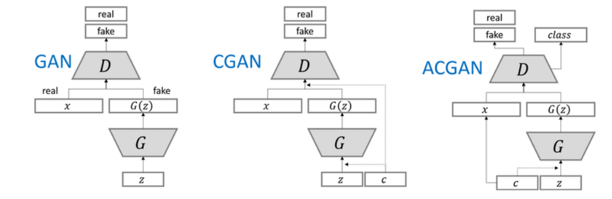
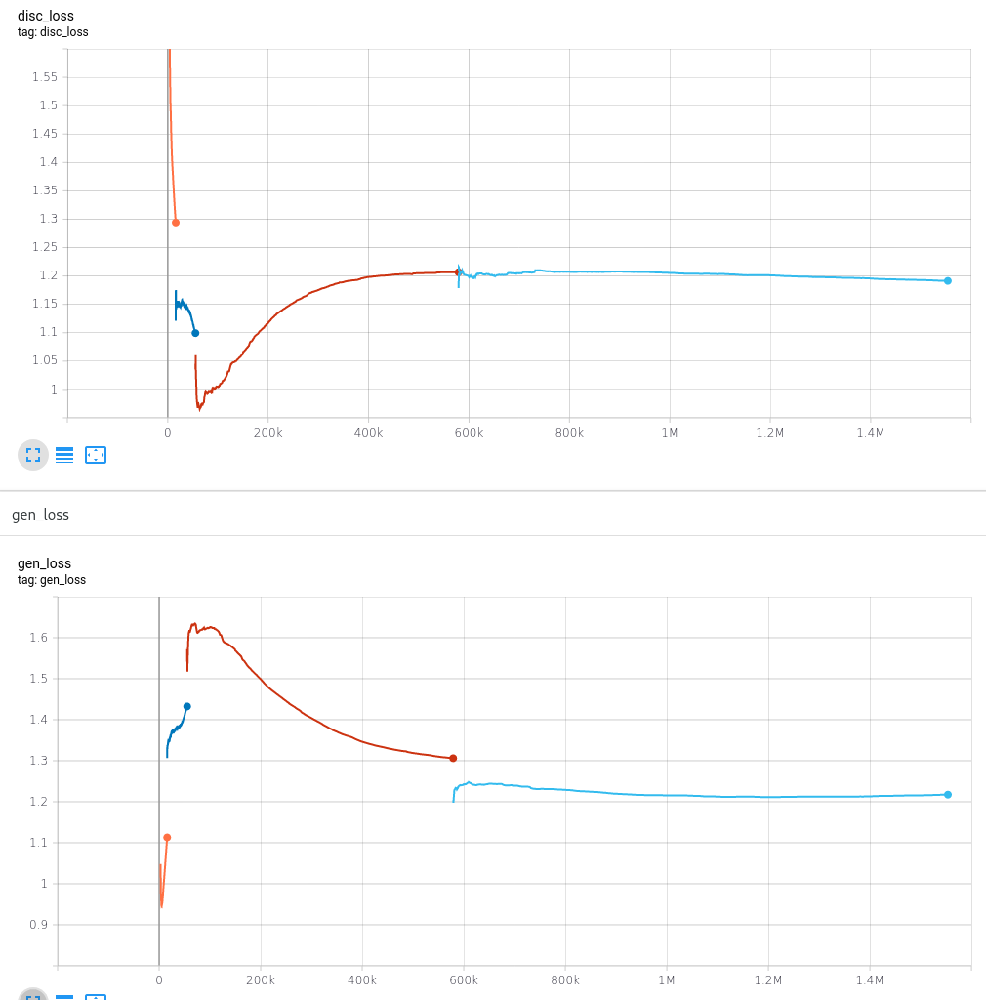
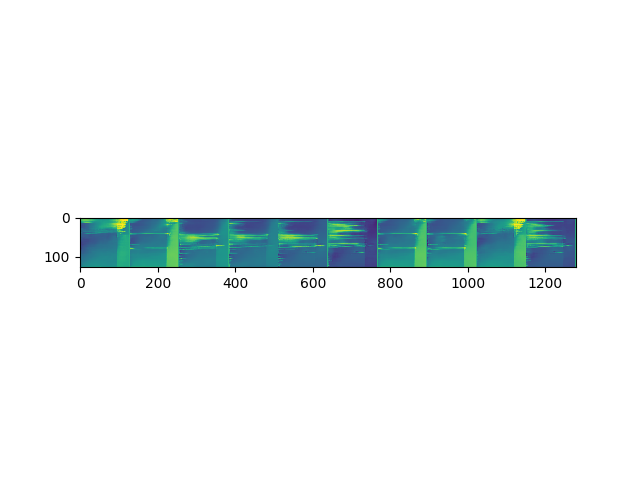
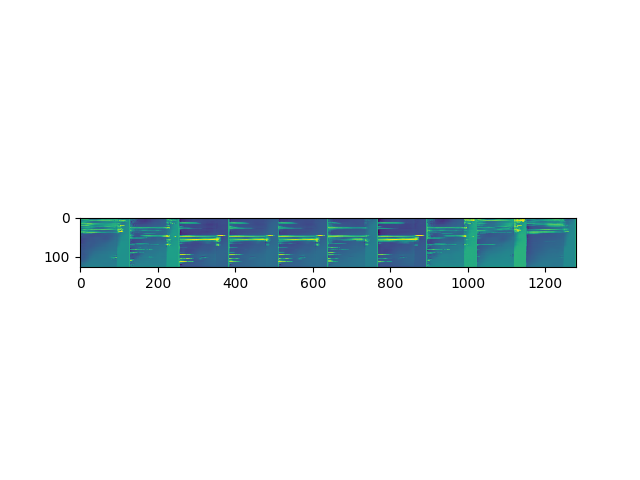
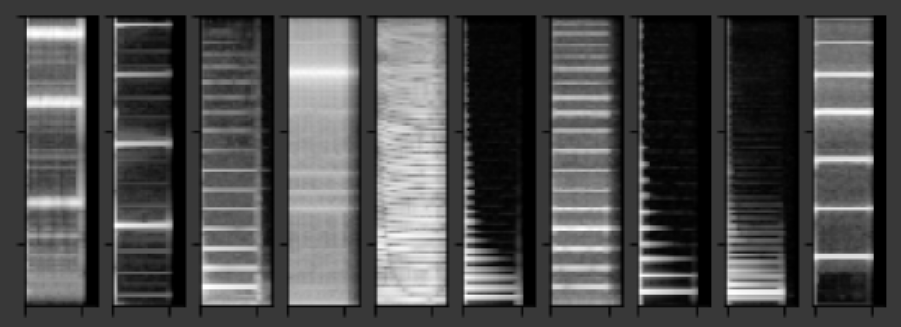
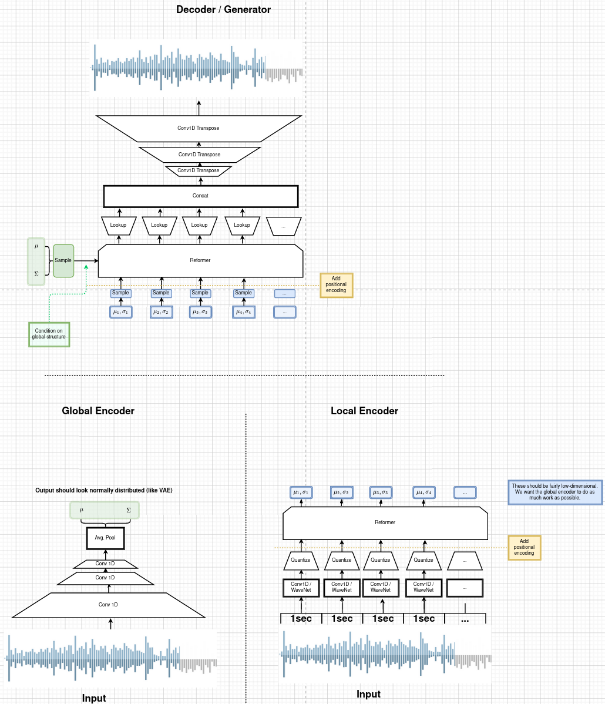

Project Log
Table of Contents
Introduction
This page is a shared log detailing the work the group has done and what challenges and problems it has encountered. For the most part, it’s updated weekly unless some big change happens.
A time log can be found at Google Sheets: https://bit.ly/2PRKRl8
The time log has exact tasks worked on each entry, for each
Week 12
Progress
We are currently working hard on getting pitch conditioning to work since that is the bottleneck for connecting with structure. To accomplish this, we are constantly reading about ways of conditioning GANs, one of which is using an auxiliary classifier.
Pitch conditioning and Auxiliary Classifier
As explained last week, we require this step to be able to choose which notes are being played. However, from our research and from limited testing, we found that the generator rarely if ever made use of the additional pitch information. To encourage the generator to actually use it, we implement an auxiliary classifier loss to the network.

Figure 1: Overview of how a Auxiliary Classifier GAN works (ACGAN)
The ACGAN in figure 1 shows pitch class as \(c\), noise input as \(z\), and the real image as x (which also needs a pitch class)
Without explaining exactly how a GAN work, there are two networks, a generator and a discriminator. The aux classifier comes in at the discriminator, who normally only has the job of determining fake vs real images from its input (either an image from the dataset or form the generator). With an aux classifier, there is a second loss, depending on if the discriminator can correctly label the pitch of the generated image.
The discriminators \(D\) job is then to maximise \[L_{D} = L_{C} + L_{S}\] where \(L_{C}\) is the log-likelihood of correct class (or pitch in this case), and \(L_{S}\) is the log-likelihood of correct source (real vs fake image).
The generators \(G\) job is then to maximise \[L_{G} = L_{C} - L_{S}\] or in words, get D to determine the class label right, but fail at determining real vs fake.
With an actual loss to the discriminator and generator, the hope is they won’t ignore the pitch vectors anymore. We have almost implemented all this, but are still experimenting with getting it entirely correct.
Training
Our required time to train has gone up drastically. For example, the pitch conditioning with an auxiliary classifier (but probably without one as well) required 2.5 days to train. That is around 1.5M steps. We may have been able to decrease this but that is still a lot of time spent on waiting for results that may or may not be great. This is after we decreased each epoch (~200 steps) from 40 seconds to 11 seconds by caching all images from the dataset into memory.

Figure 2: Training of Aux classifier, shows the Nash Equilibrium. The skips are due to pausing training to try generating.
Figure 2 shows that it does reach an equilibrium, which is where the training is optimal. It does reach this stage, but determining when to stop is a difficult thing. Another issue that arises with longer training periods is over-fitting on the dataset, which is not idea either.
Current Results of Note Generation with Conditioning and Classifier
The following results were taken from the above training session at the last skip and at the end. (steps 600K and 1600K). The pitches used are increasing, but due to a bug in our code, the spectrograms are flipped on the y axis (as the plot suggests). Here, we use an embedding of the pitch label instead of a on-hot encoding.

Figure 3: Result at 600K steps

Figure 4: Result at 1600K steps
The main issue in this seems to be mode collapse, the generator no matter pitch or noise input generates the same or similar examples. In the case of figure 4, there are three kinds of images, of which only one of them resembles a keyboard (which is what we are training on). Arguably, you could have noticed mode collapse in figure 3, but we thought we would give it a try anyway.
The next experiment we ran was a deeper network with much more trainable parameters. We trained it overnight on only acoustic keyboard sounds from the GANSynth subset of NSynth.
Figure 5: Generator loss from a deeper network
Figure 6: Discriminator loss from a deeper network
Figures 5 and 6 show a very unstable network. Ideally, they converge to the Nash equilibrium and stay around there. Due to this issue and that the deeper model requires more time to train to see improvement, we reverted back to our older version.
Week 11
No great audio results for this week unfortunately.
Progress
Report
We have made good progress on the report, though we feel that since our implementation is so advanced compared to the typical bachelor thesis, the theory section has to be really large. As such, we have primarily been writing theory and a bit on implementation.
We came up with a good structure with our supervisor and are right now focusing on making each chapter have roughly the same amount of pages. We could easily write too much for this report, so we have to find a balance of what is actually required to explain to understand the implementation. An example is: how do you explain how a transformer with attention work? This topic could easily take ~20 pages but leaving it too short would make understanding difficult for the reader who we target as our course mates.
Note generation
In order to connect this component to the final system, we need to condition it on pitch so we can controlling which pitch/note the generator generates. This is what we have been working on this week. The main idea is to append a one-hot vector representation of notes (size of 88 which are the number of keys on a standard piano or number of tones in MIDI). The hope is that the generator then learns to generate random sounding tones according to that vector.
Pitch conditioning is almost done but we cannot be sure it is entirely right. We may have to add another loss component to the discriminator called an auxiliary classifier that would encourage the generator to care more about the conditioning vector.
This idea came from the GANSynth paper. They do a lot of other things as well, including adding a phase channel to the network, allowing it to generate its own phase instead of having to reconstruct it using the Griffin-lim algorithm. They call this Instantaneous Frequency, which is the derivative of phase. We also want to implement this because even though our processing and inversion sounds “good enough”, this could improve it.
Due to limited training, we do not have a lot of great sounding examples yet so but hopefully we will have some by next week.
Structure generation
Structure generation is since last week pretty much done, maybe we could train it a bit more but our main concern is fixing note generation so that we can connect the two.
Training
We started using Bayes but we are not quite sure if we are using it correctly. The canvas course page states to ensure there are not more threads running than designated CPU cores, so the main concern is configuring TensorFlow to not spawn ~200 threads.
We also set up tensorboard to better log our results. We will most likely start auto generating our images and audio samples but it’s not a priority.
Last weeks’ goals
- We did some extensive training on Bayes
- Spectrogram processing is for the most part done (there are still some issues with normalisation)
- Wasserstein not implemented yet due to wanting to focus on processing, who we deemed to be the thing making the note generation sound off.
- Posterior collapse still an issue
- We’ve come a good way with the report but there is a lot of theory
Summary of each member
- Christoffer:
- Spent most of my time structuring and writing the report.
- Also worked with Eric and Elias to implement pitch conditioning on the GAN.
- Also helped debug our spectrogram processing though most of that work was Eric.
- Been really digging into the GANSynth details, even though they don’t do a great job of explaining their model.
- Finally, did some training on Bayes and attempted to configure TensorFlow/numpy to only use x amount of threads.
- Eric:
- I mostly worked on the VAE(which is starting to look like a dead-end to me)
- Worked on GAN to add the pitch conditioning and fix normalisation.
- Carl:
- Wrote on a few sections including ethics and music transformer, rewrote midi pipeline
- Lovisa:
- Working on Wasserstein GAN and the maths behind it.
- Have been reviewing GitHub issues and added content to the report.
- Cao:
- Did some reading and expanded some of the subsections for the final report.
- Also reviewed the specgan/ pipeline for more understanding so id be able to help with writing the implementation section/ documentation for the code.
Elias:
- Worked on getting pitch conditioning to work together with Christoffer and
Eric.
- Also worked on implemented an alternative GAN training scheme which
has some similarities to Wasserstein GAN.
Next week
- Auxiliary classifier for the SpecGAN
- Maybe incorporate WGAN if results are not great
- Work on connecting structure and note, even if note is not on par with structure yet.
- Keep adding to the report, particularly the implementation sections.
Week 10
Progress
Report
More and more chapters are being handled, specifically the theory parts and techniques we have used over the course of the project. There is also a complete structure that makes it easy to add content. We have also been thinking about how we present our journey in the report, and decided that we would add an experiments section.
Note Generation
We are currently trying to implement a Wasserstein GAN, which should improve the results of the GAN. Below are some audio files that have been processed back from spectrograms generated by our model.
Generated results after training on the GANSynth dataset (slight changes from the NSynth dataset) . Warning, these are quite loud!
They do not sound that good but some tonality is there. We think there may be a problem with the inversion back into audio. To demonstrate this, the following audio snippet is from real notes inverted into spectrograms and then back with the same data pipeline:
There are similar results indicating that there is an issue. Whether this is due to errors in spectrogram generation or from inverting back, we have not concluded yet.
A real inversion (with all parameters set properly) will not sound perfect due to processing audio into a spectrogram throws away the phase information of the signal. There are algorithms for rebuilding this (Griffith-lim) but they are not perfect. Early tests in the project showed that the quality is good enough, much better than the results we get now.
Structure Generation
Last week, the results sounded quite good. That is because the prior was very long, the model ended up copying too much resulting in an existing song (with some minor alterations). We think it may be due to overfitting on the dataset (MAESTRO). The following audio snippet was generated with a smaller prior:
We believe the MIDI encoding is fine (good enough) since encoding and decoding a real song gives good results (besides it not being lossless).
Bayes Training
We finally started training on Bayes; the first round is currently scheduled to train 50 epochs of our VAE implementation. We do not yet have any results of this.
Summary of each member
- Christoffer:
- Wrote initial draft for a datasets chapter, explaining the NSynth and MAESTRO datasets
- Wrote an entire theory chapter on signal processing
- Read up on how to use Bayes for scheduling running tasks
- Review of pull requests and issues in our git report repo
- Did some basic reading on Wasserstein GANs, but nothing major.
- Looked into getting Tensorboard to work (required us to uninstall other versions of TensorFlow.
- Eric:
- Wrote on experiments section in report
- Tried to figure out why the transformer is copying the prior with a lot of trial and error
- Tried hyperparameter optimisation
- Carl:
- Some infrastructure and tech support
- Work on report, mainly overall style and front pages, but also some content
- Made some plots with pgfplots, but probably going to give that up
- Lovisa:
- Took over some of the email communications, have been writing to Arne Linde about our computer at Chalmers and communicating with examinator and supervisor too. Tried to be More active on git hub, reading comments and making more reviews. Also kept working on wgan and the report.
- Cao:
- Read about RNN, LSTM, Transformer.
- Made documentation for the transformer model.
- Started writing subsections for the final report: What is ML and AI models, Variational autoencoder and Deep neural networks.
- Elias:
- Added ability to generate samples of real and autoencoded audio samples to the vae gan. Found that the results are very different so spent a lot of time tweaking hyperparameters, modifying the training algorithm and training to improve the results. Still no good results unfortunately.
- Also wrote on the report. Specifically about transformers, wavenet, and musenet.
Next week
- More extensive training of models on Bayes
- Fix spectrogram processing
- Implement Wasserstein GAN (already in progress)
- Fix posterior collapse in the VAE (similar to mode collapse in GANS)
- Keep adding content to report
Week 9
Progress
Report
We created a detailed outline of sections in the report that will make it easy to add things as we develop them. We’ve also started writing parts of the Theory chapter, explaining basic concepts. Finally, we want to write about the models we’ve implemented and tested.
Shift of focus
We decided to shift our focus entirely to the transformer and variational auto encoder since we felt the wave2midi2wave wouldn’t pan out in a way we would hope.
VAE
Elias and cao were assigned to this task, but since exams, not a lot of progress in this area was made this week. The model has however had similar results to SpecGan, so we are still researching this.
Transformer
The transformer aims to deal with the structure of music. It trains on MIDI, learning the relationships between sequences of MIDI notes and outputs the most appropriate notes. The aim of this model is to connect it with the note generation to generate complete music.
We’ve been working towards getting the music transformer model running and also implementing our own version of it. This week, we managed to run both and generate results. Below are the audio snippets of the two.
Our music transformer with prior
Music transformer implementation found online without prior
As you can hear, all three examples have structure, which is promising. We will continue working on these and later connecting it with our note generation!
Training resources
We got access to another training platform, Bayes at DS&AI division. This server has much better hardware than the previous one, but also restrictions when it comes to time slots to train and amount of training. We’ll eventually use it to most likely train the transformer since it requires better specs than we had.
Meetings
Meetings has been going well online, we try to work more in voice calls and limit how much we meet in person. It is still challenging ensuring everyone has tasks to work on and ensuring everyone is on the same page.
Exam week
Still exam week so some members haven’t gotten a lot done
- Christoffer: Work on issues in the GitHub like structuring repo, Also structured and started writing the report (signal processing in theory). A lot of the time is writing scripts to generate plots we can use in the report. Wrote guide on how to use training computer.
- Eric: Work on transformer, refactoring and general implementation details (refactor project and split parts of code into separate runnable scripts). Big issue for transformers is memory to train for long sequences and the model copying it’s prior (initial input).
- Carl: Deploy script, refactoring and reviewing GitHub pull requests. Wrote a progress bar module for our training scripts, showing progress of training.
- Lovisa: Skeleton/outline of report and also started on implementing wasserstein loss for specgan(maths heavy so complete study mode of the maths). Progress in understanding the subject so will add to report. Had trouble setting up repo (our repo) on laptop, Carl helped with that.
- Cao: Set up things for the remote computer. Has been busy with other courses to really participate much. Also as been missing an assigned task which us in the group are working on fixing for next week.
- Elias: Not a lot of work since last meeting, mostly focused on other course due to exam week.
Next week
- Keep writing report
- Continue work on music transformer
- More extensive training with training computer and potentially Bayes
- Create more thorough tests (unit and integration) (from last week)
- Write a bunch of utility functions (flags, plotting etc). (from last week)
- Continue work on the VAE and maybe begin connecting everything
Week 8
Progress
In general, because of the pandemic and exams, the project progressed less than other weeks. There have been some progress with audio generation, but it is hard to include audio snippets into this page so maybe they will exist in our repo at some point.
Training resources
We finally gained access to a computer we can use for training. This means a lot of our time was spent on setup of this computer and porting of our colab code to work on it.
Meetings
Due to the pandemic, we may start holding meetings online rather than in person (if multiple people message about not being able to join). Supervision meetings are all held online for now on until further notice from Chalmers.
Exam week
Because it is exam time for other courses, a lot of group members had to spend their time studying for those or writing reports.
MIDI framework
We now have a MIDI pipeline and library written, so we can now use this to create our models (as we’ve already begun to some extent).
Summary of each member
- Christoffer: Wrote code for flags used in specgan for training. Started training gansynth specgan on training computer. Kept communication for access to training resources.
- Eric: Setup training computer (scripts, environment) and wrote basic integration tests for our code. Also worked on our implementation of a transformer.
- Carl: Work on MIDI tools and get the music transformer repo running.
- Lovisa: Been busy with other course, but worked on trello planning for the whole group.
- Cao: Been busy with other course, kept up with work by other group members
- Elias: Work on gan vae hybrid.
Next week
- Keep writing report
- Continue work on music transformer
- More extensive training with training computer
- Create guide for how to use the training
Week 7
Important info
We’ve migrated to a new drive, which means larger storage capacity but also means the time log link has been updated to a new link. Our progress will not be updated on the old link so make sure you check the new one!
Also regarding the time log feedback about members not putting in enough time, due to the IT part of our group having more work to do regarding other courses, we’ve opted for them to only work 16h a week until next week. They will account for this by working 24h later. We also update the time log every Friday so if a week is missing
Progress
Presentation
We held the half time presentation and were satisfied with it, though we still have some problems we want to work out regarding the scope of the project.
SpecGAN
All we’ve done on specGAN this week is to setup training environment and check pointing so that we can train it for a longer period of time.
Below are some results of training the model on all kinds of guitar sounds in the NSynth dataset. Note that this set includes both acoustic and electric guitar, which sound very different.

This is a GIF of the training from epoch 0 to epoch ~140. Not much to say other than it looks decent.

This image show a longer training period, epoch ~640 of a different seed. As you can see, the spectrograms here resemble the real ones calculated in week 5. I realised I haven’t explained how a spectrogram works:
- X axis is the sample (time in discrete sense)
- Y is the frequency, or tone if you will
- Color is the magnitude of the short-term Fourier transform
The straight horizontal lines indicate a frequency or note was played for a long time. The reason for many horizontal lines are overtones of the note. These overtones should be evenly spaced, if we are trying to simulate a note from an instrument. As you can see, the model has far to go in that regard.
Also note the purple part to the right. The sound samples are 4 seconds long, with 64000 samples each but almost all sounds cut out at around 3.2s. That is way the purple area exists in each spectrogram.
I should also mention that this is trained on the valid set of NSynth, meaning instead of ~280k samples that the training set has, we are only working with ~12k. This is very bad, but the reason has to do with us not being able to load in the larger dataset into colab due to some bug that is extremely hard to troubleshoot. (Input/output error if you are curious). There is very little info online so either we try solving it on our own (no good error log of it) or we use other training resources.
We also have to work on inverting this; there are a lot of parameters that need to be specified for this inversion to be done correctly and sound okay.
New model proposal by Elias

While SpecGan is good at generating notes, it is not easy to convert an existing note to a latent vector which can be fed to the generator. This would be useful if we want to train a network to generate melodies as a sequence of latent space vectors.
The solution proposed here is to make a hybrid of variational autoencoders and gans, such that crisp images can still be generated, but it also becomes possible to encode them.
The idea is to first train a variational autoencoder, and then train a gan to generate realistic images when given the encoding and some noise as input. In order to ensure that the generated images look similar to the input, the GAN generated image is also encoded, and the generator gets an additional loss that ensures that the new encoding is similar to the encoding of the original image.
Transformer and MIDI
In the transformer regard, we are working on getting the MIDI pipeline done so that we can train the transformers on midi data. The dataset for this is MAESTRO, which includes both raw audio and MIDI of recordings.
MIDI is great at structure, and the goal of the transformers are to get long term structure. Further ahead in the project, we want to combine note generation with structure of transformers to hopefully generate music with details of raw audio and structure of MIDI.
So far, there’s a lot of research about transformers and how other models have encoded MIDI for use with machine learning.
Problems
- Resources: Still no reply about resources for training on Chalmers. Sent another mail asking for a response since it has been a week.
- Ambitions and scope of project: We will discuss this more in the next meeting.
- Low hours Carl: He has 3 other courses that take his time, which makes distributing the hours difficult.
Summary of each member
- Christoffer: Helped with structuring the presentation. Trained a specGAN to generate nice looking images (lots of bug testing and hyperparameter tuning in this task). Minor work on transformers (mostly reading about existing implementations and how to encode MIDI).
- Eric: Looked at the MIDI format and created a MIDI encoder function that can later be used in the dataset preprocessing pipelines. Read about GAN training techniques like label smoothing. Read about the MIDI format and created a function to encode MIDI files to a format that can be used to train a network.
- Carl: Gave up on wavenet (at least for now), currently working on preprocessing the MAESTRO dataset)
- Lovisa: Helped a bit with preparing presentation (along with the rest of the group), continued work on spectrogram GAN, started working on transformers with Elias and Christoffer. Mainly tried to get the Music Transformer by Magenta on GitHub to work, as well as collected some research relevant to the subject.
- Cao: Worked on the presentation with the group and presented it with Elias. Did some light reading about wave2midi2wave.
- Elias: This week I worked on, and presented the half-time presentation with cao. Also came up with a new model for encoding and synthesis of high quality data samples with untangled, normally distributed, latent representations.
Next week
- We got the recommendation to just work on implementation, but we have quite a bit of things we could add to the report already.
- Finish encoding MIDI and start experimenting with transformers for structure.
- Explore the idea described by Elias above
- Hopefully solve the resource problem
Week 6
We spent parts of the week revising the project plan, which is now accepted.
Project so far
The goal for the past two weeks have been generating a note. There has been a considerable amount of effort put towards this. Below some results are shown (hard to show audio, we should try hosting those results somewhere and linking to them)
WaveRNN

Eric managed to generate something loosely sounding like a flute using this model. Loosely as in it’s clearly a wind instrument and it is a recognisable note with overtones but it still needs some work/training.
SpecGAN
Unfortunately, the results from this model look decent, but sound terrible. It doesn’t quite follow the implementation specGAN used, so that is an area we could improve.

WaveNet
Carl attempted training WaveNet, which when listening could produce both sine and square waves.

Problems
Too ambitions: The project is very ambitious. The workflow of starting on simple tasks (generating a note etc) and building on those with sprints remedies that somewhat. Still, we want to spend some time exactly defining what the end product will be.
Better planning: We’ve realised we need a better system for distributing tasks to the members. Right now you could easily not know what to work. Our idea is to use Trello for this, but that requires setup and splitting tasks into even smaller tasks.
Resources: We need better resources for training. We’ve started asking about these things. Hopefully we will get an answer next week.
Meetings and workshops
Nothing special, most meetings regarded the project plan, the first presentation or just working on the two models explained last week.
Summary of each member
- Christoffer: Mostly worked on plan and the specGAN model. Also started a bit on final report and helped with presentation. Also been handling communication with examiner and sent mails about computing resources
- Eric: I started with training an existing model called WaveRNN where I managed to generate something that sounds like a flute note. I did the training on my personal computer at home which is not optimal. We need better computing resources. I then went on to try a model called MelNet, which is similar to WaveRNN but it uses melspectograms instead of waveforms which might be more promising.
- Carl: Some work on report; successfully training a WaveNet on sine and square waves
- Lovisa: Project plan work, as well as some on the specGAN
- Cao: Worked on the presentation, reading about GANSynth, trying out different discriminator/ generator for the simple GAN model that I implemented last week.
- Elias: Spent the first half of the week rewriting the project plan. Afterwards I primarily worked on getting a 1d convolutional autoencoder working. I kind of succeeded, but it is very computationally heavy at the moment and the loss doesn’t really decrease. The output is just noise so far.
Next week
- Presentation on tuesday
- Tweak/train note generation models
- Start work on structure models (melody)
- Begin writing parts of report (note generation)
Week 5
We spent this week working on implementing two kinds of models:
- WaveNet - a raw audio generative model mainly used for speech synthesis
- SpecGAN - a model using generative adversarial networks for training by converting audio into spectrographs.
The main purpose of this was to generate a note using the NSynth dataset (dataset consisting of different notes played on different instruments.
Project plan review
After a meeting with our examiner, there were a fair amount of things that needed to be changed in the plan.
Most of the feedback applies to the entire plan, but here are some key points:
- Background: Does not explain or motivate the problem well enough. It is meant to capture the reader but our background lacks a lot of passion required for that.
- Aim: Same here generally, does not explain why this is an important and interesting field.
- Time plan: Does not tell a story, how will we accomplish these things. Try and detail every week and what happens if we discover hurdles. It also has to detail consistent deliveries, ie if the project suddenly had to stop for whatever reason, what do we have to show for our work?
Deadline for the rewritten plan is Wednesday, at 12:00. We will also try to send it to our supervisor by Monday/Tuesday.
Project so far
So far, a lot of work has been going on using colab, a notebook editor in Google drive. It allows limited access to GPUs which makes it great for smaller experimentation of models. In the future, we’ll want to either pay for access to GPUs, or try and use Chalmers GPU clusters.
WaveNet
WaveNet requires the amplitudes to be encoded to something that is easier for the network to work with. This is done using mulaw encoding, which is basically just bucketing the amplitudes, but where is gives mode detail to small amplitudes than large ones.
SpecGAN
We were originally going to implement GAN-TTS, but because of its complexity, we decided to implement something simpler first. As mentioned, most guides on GANs are for images, so it seemed fitting to start with a model using images (spectrographs).

Figure 13: Spectrographs for 10 different notes generated
This model requires processing the audio waveform into images using digital signal processing. This did not have to be done manually, as there are plenty of libraries to use, but the challenge is to ensure all images of the entire dataset represent the same thing and have the same format and size. As such, the data preprocessing has been one of the sub tasks for this.
The other task is to implement the actual model. There are many guides on implementing a GAN using the MNIST dataset (dataset consisting of handwritten letters in image form), but some slight modifications are required to suit our needs.
Meetings and workshops
Meetings and workshops were spent working on the two models in groups of three people. Working in groups ensures everyone is learning and are helping each other.
Summary of each member
- Christoffer: Work on the SpecGAN model, specifically the part of converting the entire NSynth dataset into spectrograph images
- Eric: Work on preprocessing of data, like using the mu-law algorithm. Also been trying to implement a smaller version of wavenet and learning how to do custom training loops.
- Carl: Work on implementing wavenet and rendering the model
- Lovisa: Researched and presented sparse transformers. Also worked on the model implementation parts of SpecGAN
- Cao: Worked on implementation of the model part of GAN
- Elias: Research reformer (efficient transformer) and work a lot on wavenet implementation
Next week
- Complete the project plan
- Start basic work on project report
- Hopefully generate notes with either of the two models being worked on
- If time, start investigating using transformers for the structure part of music generation
Week 4
Most of this weeks time was spent on planning and writing the project plan.
Time log warning
Apparently the expected work amount up to (and including) week 3 was an average of 72 hours (according to mail sent to supervisor). Unless this is an error, that would mean 24 hours worked per week on average. The information we received was that it’s expected to work 20 hours a week, but that initially that is hard to achieve. In case it’s not an error, we are aware of it but it doesn’t match information we’ve gotten earlier.
Regarding project log feedback
I appreciate the feedback regarding the project log but want to explain something. So far, most of the work that has been done is either research (paper and presentation for group), writing contract/plan or minor implementation.
I mention this because so far, there’s very little to talk about regarding individual performance here. We could spend a lot of time detailing everything done, but that is much better done in the time log above. The point is, up to this point there has been a lot of shared work.
Now that the planning stage is over (which is a very shared job), this part should be easier to write as more individual tasks will be delegated.
Meetings and workshops
A meeting with Chalmers writing was booked, but since that required two groups to sign up, the meeting never went through. We will try to book another one, but since the plan now is delivered, getting feedback for it seems unneccesary.
On Wednesday, the first draft was sent to the supervisor, with feedback presented to the group on Friday morning. The meeting and workshop held on Friday was primarily spent on refining the plan after the feedback received. All in all, the group is happy with how the plan turned out considering the project is very open and at a slightly more advanced level than common for bachelor theses.
Project so far
The project plan is complete. Some initial trial and error has been performed, though generating anything close to music is far off. According to the time plan, we are now in the phase of generating a musical note using machine learning.
A issue we currently face seems to be storage space. Datasets take a fair amount of space, yet have to be loaded when training. We’re currently waiting for a reply regarding using Chalmers computing clusters but other options are available at a price. The canvas page does not specify whether pricing for such clusters are included in the 3000kr budget (as they don’t fall under components or software), so that will have to be investigated.
Summary of each member
We will use this section to detail problem solving/tasks delegated to members. Besides everyone working on the project plan, here are some tasks solved by each member
- Christoffer: So far been tasked with documentation, project log writing and generally being the secretary. Otherwise been learning TensorFlow
- Eric: Took on the challenge of creating a gantt chart, which he completed by writing his own JavaScript script. Also have been very active in initial development and testing of ideas using google colab.
- Carl: Ensured our latex documents have proper systems for commenting and change requesting, which helped writing the plan immensely.
- Lovisa: Contacted AIVA (AI music company) for info on how their product worked but didn’t get much back from them. Also went through TensorFlow guides.
- Cao: Research autoencoders and attempted implementing and training basic models using Keras and TensorFlow
Elias: Made an architecture proposal (shown below), which we will look into more next week.

Week 3
As per usual, the week began with a meeting on Tuesday followed by a longer workshop. During the meeting, the members went through what they had worked on since last Friday. For the most part, that was research on TensorFlow and a paper published by Spotify creator group.
For the workshop, it was decided that the majority of time would be spent on writing the project plan. Basic outlining was conducted to ensure everyone was on the same page regarding the content.
On Friday, there was a meeting with the supervisor where the group quickly went through some research notes they had taken from the presentations held last week. Additionally the focus of this meeting was on the project plan. There were a fair amount of criticism of the current rough draft.
After this meeting, the rest of the day involved a long workshop on writing the plan according to the criticism received earlier. A lot was changed and this brought the draft much closer to the final write up.
There is still work to be done on the plan. The deadline is next Friday with the groups’ deadline being set to Wednesday. Therefore, the next week will primarily deal with finishing the project plan.
Problems encountered
Because the group is not used to writing a research project plan but rather a product project plan, one of the greatest obstacles have been defining what will be done. Combined with the wide field, it is difficult to estimate how much time each task takes.
The project task has therefore been simplified a fair bit, but it is still in the groups ambition to incorporate the more complex features of the project given that there is available time later on.
Week 2
The week began with a meeting on Tuesday, during which a number of points were brought up
- Decide report language and register that on canvas
- Began talk about the project report
- Discussions on the current write up of the contract
The meeting was immediately followed by a workshop, where how to efficiently structure out research was determined. we concluded that the group would divide into subgroups with the intent of each reading and summarising papers. Machine learning is a wide field, beyond basic concepts, learning everything will take away too much time from the actual project.
After a meeting with the supervisor on Friday, a research meeting was held. The idea was to take the subgroups determined earlier and have them present their findings for the group. This process will be evaluated for future research meetings, but we felt it was a good start. If anything, the primary goal of them is to spark discussions, which it was very effective at.
Because Cao only returned on Thursday, the contract wasn’t sent to our supervisor until Friday evening, after the meeting. The contract is now considered finished.
Though stated in last weeks log that we would begin work on the project plan this week, small strides were made in that direction. This has a lot to do with the very open project description. The primary hurdle is to decide on a goal that is not too easy, but realistic enough to achieve. With such a wide field and different ways of doing things, we have given that part a bit more time.
Next week will be focused on the project plan and another research meeting.
Week 1
Since this is the first week of the project, the majority of it has been discussing the project and reading up on research papers. We started the week by attending the introductory seminars.
During the three meetings, we set up a slack group, had our first meeting with the supervisor and started writing the group contract.
Alone, most of us studied research papers. Since some of the members lacked experience in the field, Elias set up a notebook intended for teaching the basics.
For personal reasons, Cao was absent for part of the week, but this was notified well in advance.
For next week, we are looking to finish the group contract, continue researching and starting work on the project plan